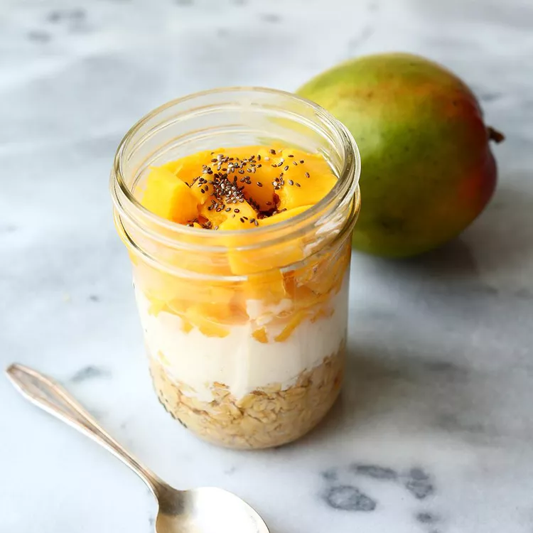

Mango Overnight Oats

Description
Prep these honey, chia seed, and mango overnight oats, and in the morning, your breakfast will be ready to eat — or to grab and go and eat at the office.
Ingredients
- 1/2 cup Quaker® Oats
- 1/4 cup low-fat milk
- 1/3 cup low-fat plain yogurt
- 1/8 teaspoon almond extract
- 1/2 cup diced mango
- 1 teaspoon honey
- 1 teaspoon chia seeds
Steps
- Add oats to your container of choice. Pour in low-fat milk and yogurt.
- Mix in almond extract. Add a layer of mango. Top off with a drizzle of honey and chia seeds.
- Place in the refrigerator for 3 hours to overnight.